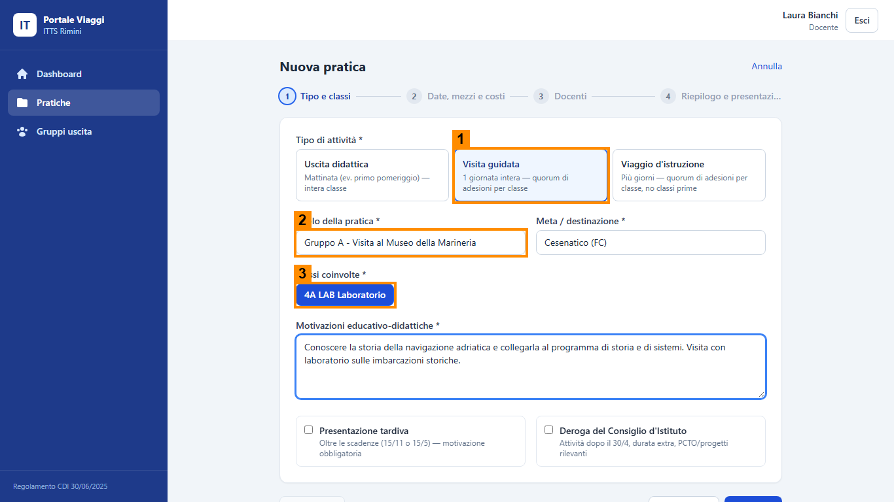
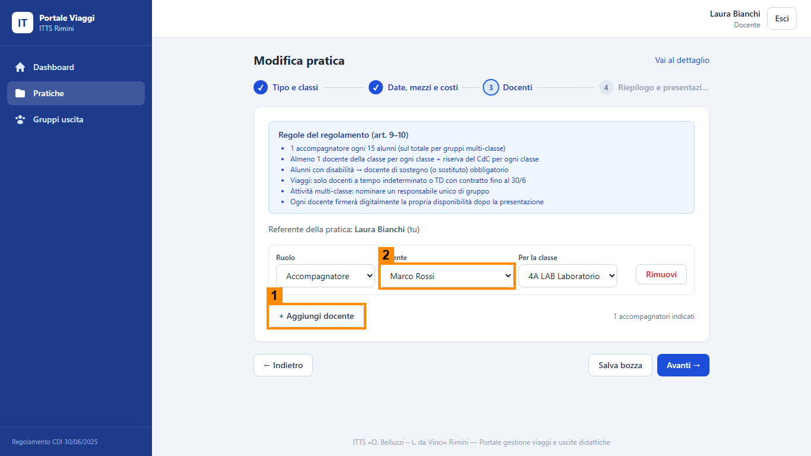
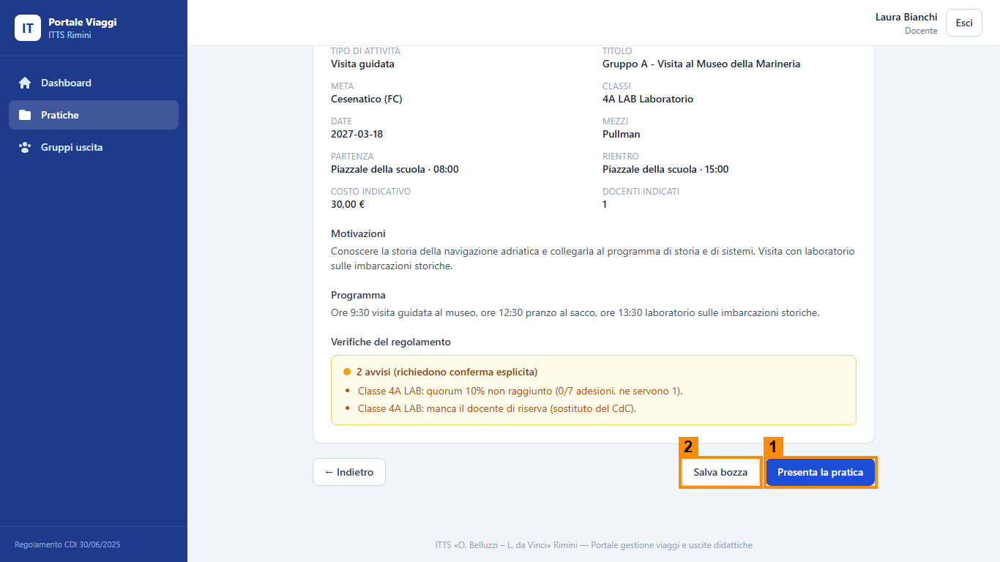

Scheda del ruolo: Docente referente
Obiettivo
Proporre l'uscita: compili la pratica con la procedura guidata, la presenti e poi segui le firme. Sei tu a creare la pratica e a vederla tornare se qualcuno chiede una correzione.
Cosa fare, passo per passo
- Dalla dashboard premi + Nuova pratica (1 nell'immagine).
- Passo 1, Tipo e classi: scegli il tipo, scrivi il titolo con «Gruppo A - » o «Gruppo B - » all'inizio, la meta e la classe, poi le motivazioni. I dati esatti sono nel copione della pratica del tuo gruppo.
- Passo 2, Date, mezzi e costi: data, mezzo, orari, costo. La spunta Serve un mezzo a pagamento attiva i preventivi.
- Passo 3, Docenti: sei già indicato come referente. Con + Aggiungi docente inserisci almeno un accompagnatore.
- Passo 4, Riepilogo e presentazione: leggi il riquadro Verifiche del regolamento. Gli errori (rosso) bloccano, gli avvisi (giallo) si confermano.
- Premi Presenta la pratica. Se compaiono avvisi, conferma con Confermo nonostante gli avvisi.
- Dopo la raccolta firme guarda le schede Adesioni e Autorizzazioni. Con Invia promemoria ai mancanti e Sollecita firme mancanti mandi un promemoria.
- Se la Dirigente chiede una revisione, in cima alla pratica compare un riquadro arancione con il motivo: premi Modifica, correggi e poi Ripresenta la pratica.



Cosa controllare
- Il titolo inizia con il nome del tuo gruppo.
- Nel riquadro «Verifiche del regolamento» non restano errori rossi.
- Dopo la presentazione lo stato in alto a destra è Presentata.
- Nella scheda Adesioni compare la risposta dello studente; nella scheda Autorizzazioni la firma del genitore.
- Hai premuto Esci quando hai finito.